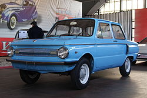
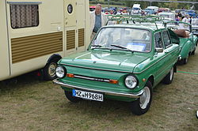
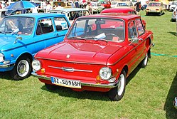

zaporozec




Історія
ЗАЗ-965/ЗАЗ-965AСтворений 1960 року, ЗАЗ-965 мав двигун потужністю тільки 23 к.с., з робочим об'ємом 0,75 л.ЗАЗ-966/ЗАЗ-966A1966 року була змінена конструкція впускного тракту та карбюратора і потужність при такому ж літражі була доведена до 30 к.с.. При цьому вдалось вберегти взаємозамінність вузлів основних агрегатів.Одночасно на заводі вживалися заходи для збільшення пробігу двигуна до капітального ремонту. Починаючи з 25-30 тис. км у 1962 році цю цифру доведено до 75 тис. км у 1968 році.Модернізований двигун МеМЗ-966 названо МеМЗ-966А. Конструктивні зміни забезпечили підвищення потужності, надійності, довговічності і економічності. При дотриманні правил експлуатації новий двигун збільшував пробіг автомобілю до першого капітального ремонту до 75 тисяч кілометрів, тоді, як до модернізації, після 50 тисяч кілометрів доводилося, як правило, замінювати, ряд деталей циліндро-поршневої групи, вкладки, шатунні підшипники.
ЗАЗ-968/ЗАЗ-968МВ квітні 1968 року з конвеєра заводу «Комунар» зійшли перші «Запорожці» з силовим агрегатом МеМЗ-968.Пробіг двигуна до капітального ремонту збільшився з 25-30 тис. км у 1962 році до 75 тис. км в 1968 році. На цьому можливості агрегату «965»—"966" були практично вичерпані. Потрібний був потужніший двигун, причому такий, який можна би було встановити на «Запорожці» моделі 966 без переробки мотовідсіку. Він був створений на Мелітопольському моторному заводі. Новий агрегат, як і його попередник, об'єднував в одному блоці двигун, механізм зчеплення, коробку передач і головну передачу. Двигун отримав назву МеМЗ-968. Двигун — чотиритактний, чотирициліндровий, V-подібний, повітряного охолодження. Робочий об'єм — 1,2 л.